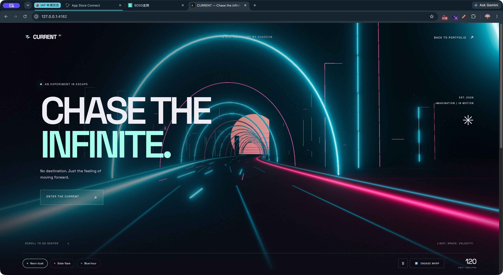
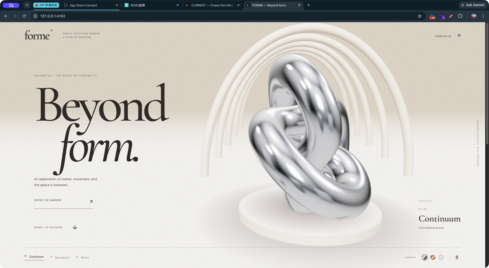

IMMERSIVE NIGHT DRIVE01 / CURRENT
穿过光，进入无限。
霓虹城市、弯曲公路、连续穿行。三种氛围与加速模式，让整个场景跟随你的操作变化。
推荐体验：点击 ENTER THE CURRENT 进入沉浸模式，再点 ENGAGE WARP 加速；底部可切换三种氛围。
ORBIT 星球作品保留。
这里是 CURRENT 与 FORME 的全新 3D 审核版。
点击进入，即可实际操作。

霓虹城市、弯曲公路、连续穿行。三种氛围与加速模式，让整个场景跟随你的操作变化。
推荐体验：点击 ENTER THE CURRENT 进入沉浸模式，再点 ENGAGE WARP 加速；底部可切换三种氛围。

悬浮金属雕塑、真实材质反射、建筑空间。三种造型与三种材质，构成一座可探索的数字展馆。
推荐体验：点击 ENTER THE GARDEN 后拖动雕塑；底部切换形态和银、铜、瓷三种材质。